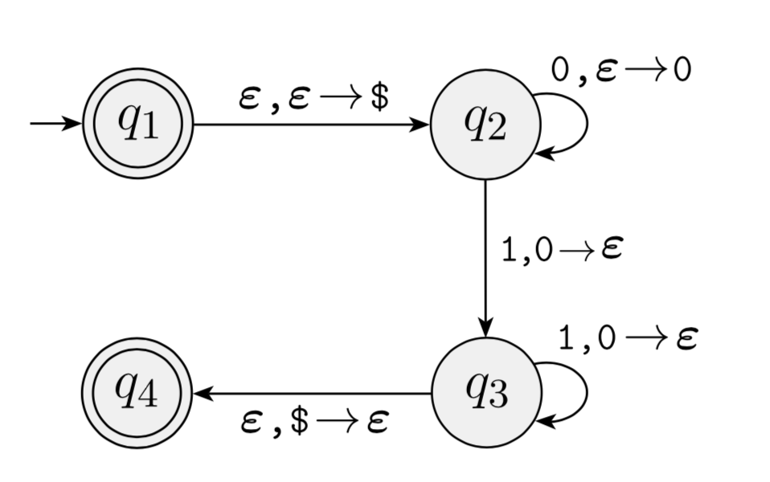
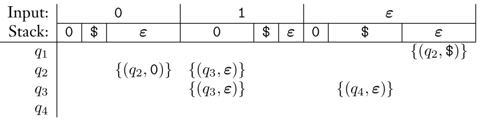

FLAT
8. Push-down Automata
November 23, 2019
Review
CFGs
- In this chapter we present context-free grammars (CFGs), a more powerful method of describing languages.
- Such grammars can describe certain features that have a recursive structure, which makes them useful in a variety of applications.
CFGs
- Context-free grammars were first used in the study of human languages.
- One way of understanding the relationship of terms such as noun, verb, and preposition and their respective phrases leads to a natural recursion because noun phrases may appear inside verb phrases and vice versa.
- Context-free grammars help us organize and understand these relationships.
CFGS
- CFGs generate strings
- Strings can be derived from CFGs
- Some strings may be ambiguous
- CFGs can be convereted to a standard form known as Chomsky Normal Form
- CFGs are important in their application to compilation
Introduction
PDA
- In this section we introduce a new type of computational model called pushdown automata (PDA).
- These automata are like nondeterministic finite automata but have an extra component called a stack.
- The stack provides additional memory beyond the finite amount available in the control.
- The stack allows pushdown automata to recognize some nonregular languages.
PDA
- Pushdown automata are equivalent in power to context-free grammars.
- This equivalence is useful because it gives us two options for proving that a language is context free.
- We can give either a context-free grammar generating it or a pushdown automaton recognizing it.
PDA
- Certain languages are more easily described in terms of generators, whereas others are more easily described by recognizers.
- PDAs can be deterministic or non-deterministic
PDA
Finite Automaton Schematic

Pushdown Automaton Schematic

Stacks

Stacks
- Stacks operate by pushing and popping
- Pushing adds a new element to the top of the stack
- Popping remove the top element of the stack
- Stacks are first-in-last-out (FILO) data structures
Definition of a PDA
Defining a PDA
- The formal definition of a pushdown automaton is similar to that of a finite automaton, except for the stack.
- The stack is a device containing symbols drawn from some alphabet.
- The machine may use different alphabets for its input and its stack, so now we specify both an input alphabet Σ and a stack alphabet Γ.
PDA State Diagram Example
PDA Transition
- At the heart of any formal definition of an automaton is the transition function, which describes its behavior.
- Recall that Σε = Σ ∪ {ε} and Γε = Γ ∪ {ε}.
- The domain of the transition function is Q × Σε × Γε.
- Thus the current state, next input symbol read, and top symbol of the stack determine the next move of a pushdown automaton.
PDA Transition
- Either symbol may be ε, causing the machine to move without reading a symbol from the input or without reading a symbol from the stack.
- For the range of the transition function we need to consider what to allow the automaton to do when it is in a particular situation.
- It may enter some new state and possibly write a symbol on the top of the stack.
- The function δ can indicate this action by returning a member of Q together with a member of Γε, that is, a member of Q × Γε.
PDA Transition
- Because we allow nondeterminism in this model, a situation may have several legal next moves.
- The transition function incorporates nondeterminism in the usual way, by returning a set of members of Q × Γε, that is, a member of P(Q × Γε).
- Putting it all together, our transition function δ takes the form δ : Q × Σε × Γε → P( Q × Γε ).
Formal Definition
A pushdown automaton is a 6-tuple (Q, Σ, Γ, δ, q0, F ), where Q, Σ, Γ, and F are all finite sets, and
- Q is the set of states,
- Σ is the input alphabet,
- Γ is the stack alphabet,
- δ: Q × Σε × Γε→ \mathbb{P}(Q × Γε) is the transition function,
- q0 ∈ Q is the start state, and
- F ⊆ Q is the set of accept states.
Determinism and PDAs
Determinism
- Pushdown automata may be nondeterministic.
- Deterministic and nondeterministic pushdown automata are not equivalent in power
- Nondeterministic pushdown automata recognize certain languages that no deterministic pushdown automata can recognize
Determinism
- Recall that deterministic and nondeterministic finite automata do recognize the same class of languages, so the pushdown automata situation is different.
- We focus on nondeterministic pushdown automata because these automata are equivalent in power to context-free grammars.
PDA Computation
PDA Computation
- A pushdown automaton M = (Q, Σ, Γ, δ, q0, F ) computes as follows.
- It accepts input w if w can be written as w = w_{1}w_{2} ···w_{m}, where each w_{i} ∈ Σ_{ε} and sequences of states r_{0},r_{1},...,r_{m} ∈ Q and strings s_{0},s_{1},...,s_{m} ∈ Γ^* exist that satisfy the following three conditions.
- The strings si represent the sequence of stack contents that M has on the accepting branch of the computation.
PDA Computation
- r0 = q0 and s0 = ε. This condition signifies that M starts out properly, in the start state and with an empty stack.
- For i = 0,…,m − 1, we have (ri+1,b) ∈ δ(r_{i},w_{i}+1,a), where si = at and si+1 = bt for some a, b ∈ Γε and t ∈ Γ*. This condition states that M moves properly according to the state, stack, and next input symbol.
- rm ∈ F . This condition states that an accept state occurs at the input
Empty Stack
- The formal definition of a PDA contains no explicit mechanism to allow the PDA to test for an empty stack.
- This PDA is able to get the same effect by initially placing a special symbol $ on the stack.
- Then if it ever sees the $ again, it knows that the stack effectively is empty.
Examples
Example 2.14
The following is the formal description of the PDA (page 112) that recognizes the language {0^n1^n| n ≥ 0}. Let M1 be (Q, Σ, Γ, δ, q1, F ), where:
- Q = \{q_{1}, q_{2}, q_{3}, q_{4}\},
- Σ = {0,1},
- Γ = {0,$},
- F = {q1, q4}, and
- δ is given by the following table, wherein blank entries signify ∅.
Example 2.14
Example 2.14
- We can also use a state diagram to describe a PDA
- We write “a,b → c” to signify that when the machine is reading an a from the input, it may replace the symbol b on the top of the stack with a c.
- Any of a, b, and c may be ε.
Example 2.14
- If a is ε, the machine may make this transition without reading any symbol from the input.
- If b is ε, the machine may make this transition without reading and popping any symbol from the stack.
- If c is ε, the machine does not write any symbol on the stack when going along this transition.
Example 2.14
Example 2.14
Example 2.16
This example illustrates a pushdown automaton that recognizes the language:
A = \{a^i b^j c^k \vert i, j, k ≥ 0\ and\ i = j\ or\ i = k\}
Example 2.16
Informal Description
- Designing a PDA to recognize A is similar recognizing \{0^n1^n\}.
- We need to use the stack to remember the size of i.
- The apparent problem is that we don’t know whether i will equal j or k.
- This problem is addressed by using non-determinism – we will test for both.
Example 2.16
Informal Description
- Using its nondeterminism, the PDA can guess whether to match the a’s with the b’s or with the c’s
- Think of the machine as having two branches of its nondeterminism, one for each possible guess.
- If either of them matches, that branch accepts and the entire machine accepts.
Example 2.16
- Solve in class
Example 2.16

Example 2.18
\{ww^R \vert w ∈ \{0,1\}^*\}
Informal Description
- As each input symbol is read, push the symbol onto the stack.
- Because we can’t know when w ends, we should non-deterministically change state to the beginning of wR.
Informal Description
- As we read each symbol of wR, we should pop a matching symbol off of the stack.
- When we have finished consuming wR, we should also have emptied the stack. If so, we can accept the string.
Example 2.18
- Solve in class
Example 2.18

Correlations
| . | Regular Languages | Context-Free Languages |
|---|---|---|
| Language Recognizer | Finite Automaton (NFA, DFA) | Pushdown Automaton |
| Language Generator | Regular Expression | Context-Free Grammar |